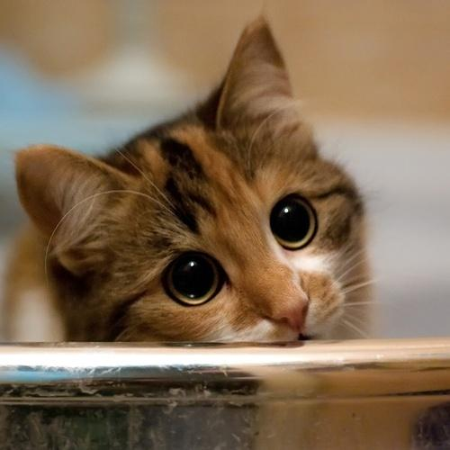
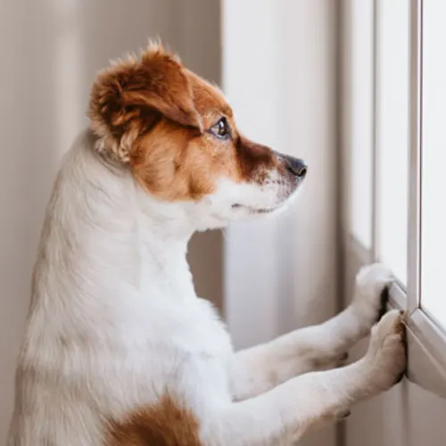

PREGUNTAS FRECUENTES

¿DONDE Y COMO PUEDO ADOPTAR?
Puedes acceder a entrevistas dentro de CABA en nuestro refugio "Huellitas", o ingresar a la seccion REFUGIOS para conocer otros refugios donde podras visualizar otros regufios en otras ubicaciones, donde podras dar hogar a alguna de nuestras huellitas.

¿COMO PUEDO CONTRIBUIR?
Adoptando, donando, accediendo a los refugios cercanos y ayudando con el cuidado de los animales, o dejando tu apoyo con suplementos, comida, juguetes.

¿QUE ANIMALES PUEDO ADOPTAR EN HUELLITAS?
Por el momento huellitas se encarga de el cuidado, refugio y adopcion de perros y gatos. Sin embargo, si buscabas otro compañero, puedes acceder a la seccion REFUGIOS y ojear si en alguno puedes encontrar alguna huellita que necesite un hogar y mucho amor